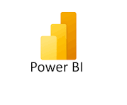
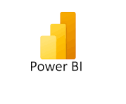

.jpeg)
Who Am I
A Data Analyst skilled in SQL, Python, R, Power BI, AI Project Management, Finance, and Risk Management.
A Data Analyst skilled in SQL, Python, R, Power BI, AI Project Management, Finance, and Risk Management.
I have been using data to solve business problems for over a decade in the finance industry. While most of my valuable pieces of work were done under employment contracts, you can find below a few personal projects that can give you a taste of me
Developed SQL queries and Power BI dashboards to answer key revenue-related questions for 3000-Spartans Microfinance. The project included data extraction, transformation, and visualization, enabling actionable insights for financial decision-making.
Conducted an Environmental, Social, and Governance (ESG) risk analysis for companies in the S&P 500 index using Python integrated within Excel. Delivered actionable insights by leveraging data analysis techniques to assess ESG factors impacting financial performance.
Developed a dynamic RShiny application to forecast cash demand at ATMs for The Gladiators Bank. The solution utilized predictive modeling and real-time data visualization, ensuring optimal cash allocation and reducing operational costs.
Performed Customer Lifetime Value (CLV) analysis for loan products at Mask-of-Zoro Bank using R. Leveraged advanced statistical models to evaluate customer profitability and retention, providing actionable insights for targeted marketing and improved loan strategies.